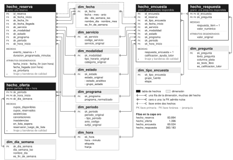
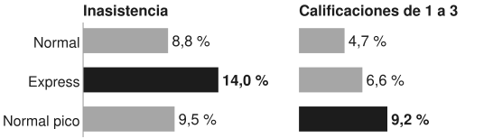
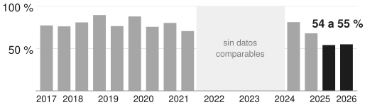
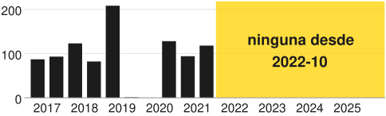
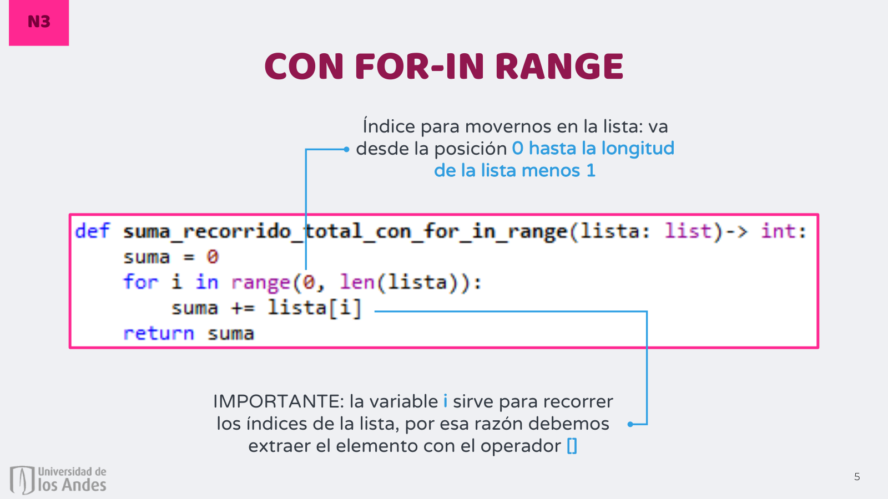

Entrega 1CupiTaller: actores y preguntas
Centro de tutorías del Departamento de Sistemas para Introducción a la Programación y otros cursos de primeros semestres.
Entrega 1Lakehouse: de Bookeau al modelo
Entrega 1Modelo dimensional en la capa oro

Fig. 1. Constelación de 4 hechos y 10 dimensiones, tal como está en el DDL de la Entrega 1. Cada línea va de la PK a la fila de la FK que la usa.
Entrega 1Lo que respondió la bodega

Fig. 2. A1 y A2 por modalidad: Express tiene 60 % más inasistencia que Normal; Normal pico, el doble de calificaciones bajas.

Fig. 3. A1: la ocupación de los cupos bajó a 55 % sin que la capacidad se ajustara.
Entrega 2Además, el curso cambia
58 documentos del curso · tres versiones

Fig. 4. Las clases de 2026-20 frente a las 12 presentaciones que tenemos de 2020-21. Sin introducciones ni ejercicios.
La bodega registra · reservas grupales, que anuncia el programa 2020-20

Fig. 5. Las reglas están en los documentos, no en Bookeau, y algunas ya no aplican.
Ingesta visual: el código está en imágenes

Texto del PDF
Con visión
def suma_recorrido_total_con_for_in_range(lista: list) -> int:
suma = 0
for i in range(0, len(lista)):
suma += lista[i]
return suma
Fig. 6. Con visión se indexan 49.673 palabras; sin ella, 23.203.
Dos enfoques, un mismo modelo
Fig. 7. Mismo modelo (gpt-6-luna) y mismas reglas; cambia el contexto. Tokens de entrada por consulta.
Resultados: 26 preguntas

Fig. 8. Cada cuadro es una pregunta. Sin visión, el RAG no acierta ninguna cuyo contenido está en una imagen.
Fig. 9. Costo por 1.000 consultas. Para R1: RAG visual con filtro de vigencia; un semestre ya ocupa el 10 % de la ventana.
Entropía documental: dos versiones
| Sin etiquetas | ✗✓✗✓✗✓ | 3 de 6 con la regla antigua |
| Con filtro | ✓✓✓✓–✓ | 0 de 6 |
Fig. 10. Sin y con filtro de vigencia; abajo, seis reglas que cambiaron.
Agente híbrido: documentos y SQL
Fig. 11. Traza real del agente para R2: 2 pasos, 4,9 s, US$ 0,0004.
Fig. 12. Cuarto intento, tras agregar la lista del catálogo y el filtro de semestre: 4 pasos, US$ 0,0007. Omite los índices de strings (Fig. 4).